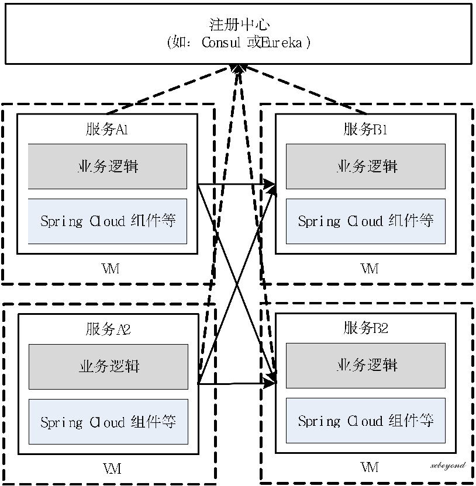
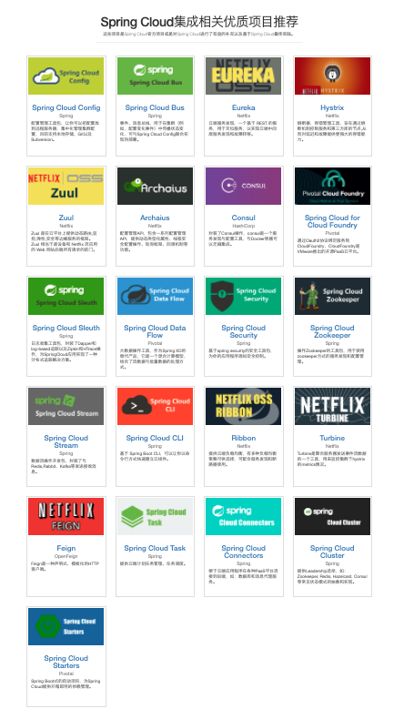
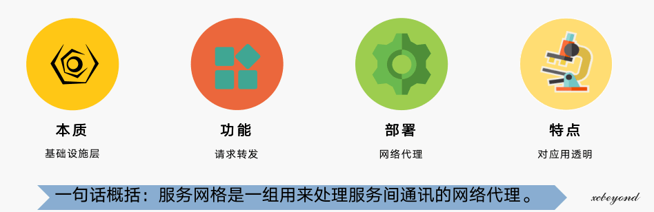
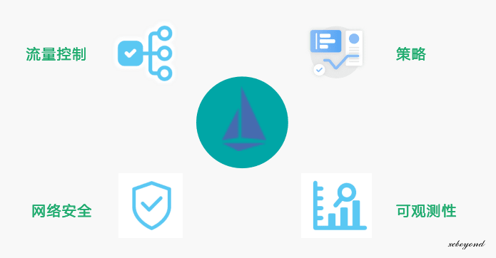
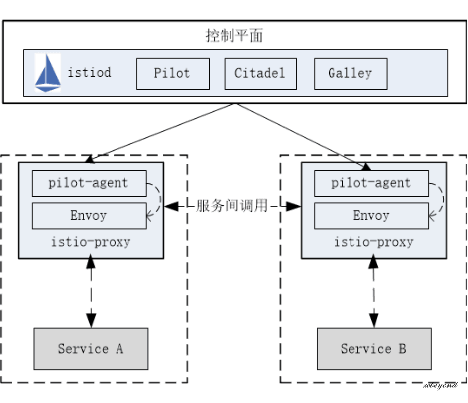
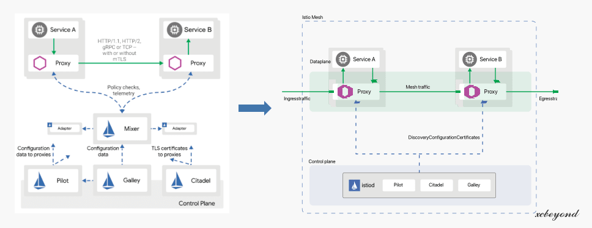
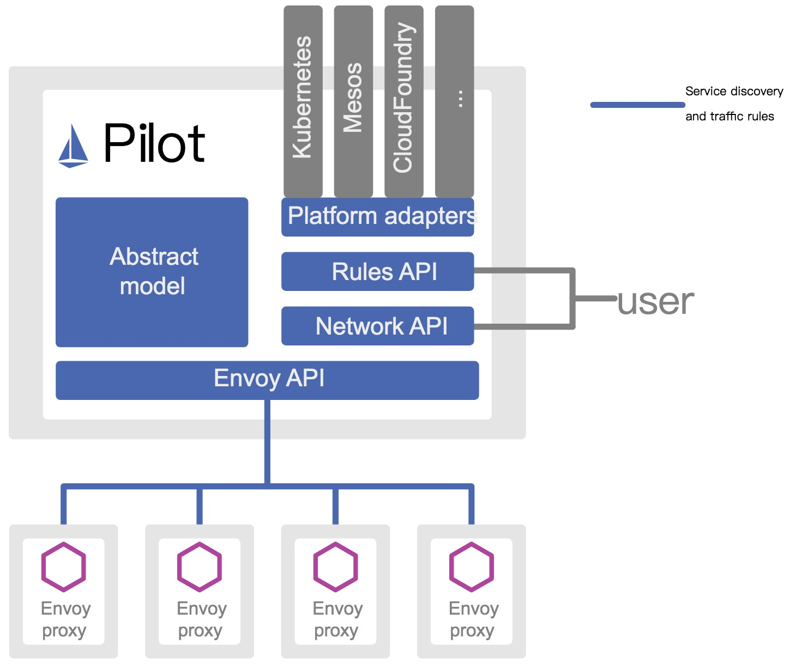
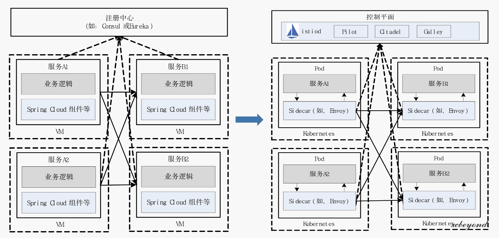

- 作者 :Xcbeyond
- 发表于 :2021-09-11 21:34:31
- 分类 : Service Mesh
一直以来“微服务”都是一个热门的词汇，在各种技术文章、大会上，关于微服务的讨论和主题都很多。对于基于 Dubbo、SpringCloud 技术体系的微服务架构，已经相当成熟并被大家所知晓，但伴随着互联网场景的复杂度提升、业务快速变更以及快速响应，如何快速、稳定、高效的应对变幻莫测的业务市场需求，这类技术体系（如：Spring Cloud）的传统微服务架构就变得力不从心，此时微服务架构再次升级，将服务网格作为了新一代微服务架构。
本文将从传统微服务架构出发，为大家阐述新一代微服务架构–服务网格，它能解决什么问题，为用户带来什么，可作为你对服务网格的认知文章。
1、背景
微服务，也称之为微服务架构，是一种架构风格，相比单体应用，它将应用程序拆分为一组服务，并将这些服务组合起来来完成整个复杂的业务功能。下面这些特征就能高度反映出它的价值所在：
- 高度可维护和可测试性
- 松耦合
- 独立部署
- 围绕业务能力进行组织
- 小团队拥有
简单的回顾完微服务架构的概念，我们一起看看新一代微服务架构是如何诞生的。
1.1 基于 Spring Cloud 的微服务体系
下面这张图是基于 Spring Cloud 技术体系的微服务架构图：

针对上图，从以下两个方面解读：
- 技术栈：众所周知，Spring Cloud 相关技术组件很多，虽说大部分都是开箱即用，一旦深度使用，学习成本是很高的，对于初学者（非 Spring Cloud 使用者）来讲门槛很高。（太多，而且还都要掌握，太难了！）
 - 实现：所有微服务都需要将自身注册到注册中心（如：Consul、Eureka 等），来完成服务间的相互调用。每个微服务都必须依赖 Spring Cloud 组件（即：在 pom.xml 中引入），业务逻辑和 Spring Cloud 组件共生在同一个服务中。
还记得 Spring Cloud 相关组件版本升级时的烦恼么？为了使用新版本中的某个特性，或者解决旧版本中存在的漏洞,Spring Cloud 版本升级屡见不鲜，一不留神就会出现版本依赖冲突、启动不了等等问题，升级完还得安排测试人员测试验证。技术含量不高，但确实招人烦啊。
再完美的程序，也避免不了零 bug。上线之后，随着系统使用场景的多样性，将逐步会暴露出一些问题，而出现问题就得解决问题，并小心翼翼安排上线，这一系列过程，想必各位肯定深有感触，各有故事。用“小心翼翼”来形容这一过程决不夸张，因为一个小小的改动可能会影响到其它，甚至整个系统，这锅谁都不太想背，能不改打死都不改的原则一直是不愿被打破的壁垒。
在传统行业（如：银行），由于系统的多样性、庞大、复杂性，全部加入微服务行列是不现实的，新老系统共存是一种最为常见的现象。而共存系统间的治理、运维等成了老大难问题。
面对升级、维护、新老系统共存等这些问题，难道就束手无策了吗？
1.2 传统微服务架构面临的挑战
面对上述暴露出的问题，并在传统微服务架构下，经过实践的不断冲击，面临了更多新的挑战，综上所述，产生这些问题的原因有以下这几点：
- 过于绑定特定技术栈 当面对异构系统时，需要花费大量精力来进行代码的改造，不同异构系统可能面临不同的改造。
- 代码侵入度过高 开发者往往需要花费大量的精力来考虑如何与框架或 SDK 结合，并在业务中更好的深度融合，对于大部分开发者而言都是一个高曲线的学习过程。
- 多语言支持受限 微服务提倡不同组件可以使用最适合它的语言开发，但是传统微服务框架，如 Spring Cloud 则是 Java 的天下，多语言的支持难度很大。这也就导致在面对异构系统对接时的无奈，或选择退而求其次的方案了。
- 老旧系统维护难 面对老旧系统，很难做到统一维护、治理、监控等，在过度时期往往需要多个团队分而管之，维护难度加大。
上述这些问题都是在所难免，我们都知道技术演进来源于实践中不断的摸索，将功能抽象、解耦、封装、服务化。 随着传统微服务架构暴露出的这些问题，将迎来新的挑战，让大家纷纷寻找其他解决方案。
1.3 迎来新一代微服务架构
为了解决传统微服务面临的问题，以应对全新的挑战，微服务架构也进一步演化，最终催生了服务网格（Service Mesh）的出现，迎来了新一代微服务架构，也被称为下一代微服务。为了更好地理解 Service Mesh 的概念和存在的意义，让我们我们来回顾一下这一演进过程中的四个阶段。

- 耦合阶段：高度耦合、重复实现、维护困难，在耦合架构设计中体现的最为突出，单体架构就是典型的代表。
- 公共 SDK：让基础设施功能设计成为公共 SDK，提高利用率，是解藕最有效的途径，比如 Spring Cloud 就是类似的方式。但学习成本高、特定语言实现，却将一部分人拦在了门外。
- Sidecar 模式：再次深度解藕，不单单功能解藕，更从跨语言、更新发布和运维等方面入手，实现对业务服务的零侵入，更解藕于开发语言和单一技术栈，实现了完全隔离，为部署、升级带来了便利，做到了真正的基础设施层与业务逻辑层的彻底解耦。另一方面，Sidecar 可以更加快速地为应用服务提供更灵活的扩展，而不需要应用服务的大量改造。
- Service Mesh：把 Sidecar 模式充分应用到一个庞大的微服务架构系统中来，为每个应用服务配套部署一个 Sidecar 代理，完成服务间复杂的通信，最终就会得到一个的网络拓扑结构，这就是 Service Mesh，又称之为“服务网格“。它从本质上解决了传统微服务所面临的问题。
2、服务网格介绍
本节从服务网格的定义、核心价值、架构等方面介绍，让你对它有个充分的认知、了解。
2.1 服务网格的定义
服务网格（Service Mesh），作为服务间通信的基础设施层。是轻量级高性能网络代理，提供安全的、快速的、可靠地服务间通讯，与实际应用部署一起，但对应用透明。应用作为服务的发起方，只需要用最简单的方式将请求发送给本地的服务网格代理，然后网格代理会进行后续的操作，如服务发现，负载均衡，最后将请求转发给目标服务。
归纳起来，如下图：

2.2 服务网格的核心价值
实现业务逻辑和非业务逻辑的分离。
- 为下沉到基础设施提供可能：将微服务通信下沉到基础设施层，屏蔽了微服务处理各种通信问题的复杂度。
- 帮助应用轻量化，专注业务：开发者无需关心通信层和服务治理的具体实现，真正像本地调用一样使用微服务，通信相关的一切工作直接交给 Service Mesh，让开发者更关注于业务的开发。
- 实现应用的云原生化：加速应用上云，实现云原生化
2.3 主要功能特性
那么服务网格到底能带来哪些实用的功能呢？

- 流量控制：为应用提供智能路由（如，金丝雀发布、A/B 测试等）、超时重试、熔断、故障注入、流量镜像等各种控制能力。
- 策略：可以为流量设置配额、黑白名单等策略。
- 网络安全：提供服务间访问控制、 TLS 加密通信。
- 可观测性：为所有通信生成详细的遥测数据，包括指标数据、日志、追踪，提供给应用系统完整的监控能力。
2.4 整体架构
服务网格整体架构如下图所示：

主要核心内容分为：
- 控制平面： 控制和管理数据平面中的 Sidecar 代理，完成配置分发、服务发现、流量路由、授权鉴权等功能，以达到对数据平面的统一管理。
- 数据平面： 由整个网格内的 Sidecar 代理组成，这些代理以 Sidecar 的形式和应用服务一起部署。这些代理负责协调和控制应用服务之间的所有网络通信。每一个 Sidecar 会接管进入和离开服务的流量，并配合控制平面完成流量控制等方面的功能。
2.5 Istio 框架
Istio 是由 Google 、IBM 和 Lyft 发起的开源的服务网格框架。该项目在 2017 年推出，截止目前已发布了 1.10.1 版本。
Istio 提供了一个完整的解决方案，为整个服务网格提供行为洞察和操作控制，以满足微服务应用程序的多样化需求。

2.5.1 Istio 数据平面
Istio 的数据平面默认使用 Envoy ，是基于 Envoy 新增了一些扩展（即：istio-proxy），C++ 语言编写。

主要职责：
- 服务发现：探测所有可用的上游或下游服务实例。
- 健康检测：探测上游或下游服务实例是否健康，是否准备好接收网络流量。
- 流量路由：将网络请求路由到正确的上游或下游服务。
- 负载均衡：在对上游或下游服务进行请求时，选择合适的服务实例接收请求，同时负责处理超时、断路、重试等情况。
- 身份验证和授权：在 istio-agent 与 istiod 配合下，对网络请求进行身份验证、权限验证，以决定是否响应以及如何响应，使用 mTLS 或其他机制对链路进行加密等。
- 链路追踪：对于每个请求，生成详细的统计信息、日志记录和分布式追踪数据，以便操作人员能够理解调用路径并在出现问题时进行调试。
2.5.2 Istio 控制平面
自 Istio 1.5 版本开始，控制平面由原来分散、独立部署的三个组件（Pilot、Citadel、Galley）整合为一个独立的 istiod，变成了一个单进程、多模块的组织形态（下图右图），极大的降低了原来部署的复杂度。

- Pilot：负责 Istio 数据平面的 xDS 配置管理，具体包括服务发现、配置规则发现、xDS 配置下发。
- Citadel：负责安全证书的管理和发放，实现授权和认证等操作。
- Galley：负责配置的验证、提取和处理等功能，将 Istio 和底层平台(如,Kubernetes)进行解耦。
其中，Citadel、Galley 组件逐步在弱化，在 Istio 版本迭代中，已经基本看不见它们的踪迹了。（已经不断整合在其它组件中）
接下来，着重看看 Pilot 组件。
Pilot 是 Istio 中的核心组件，用于管理和配置部署在特定 Istio 服务网格中的所有 Sidecar 代理实例。它管理 Sidecar 代理之间的路由流量规则，并配置故障恢复功能，如超时、重试和熔断等。

关键模块：
- 抽象模型（Abstract model）：为了实现对不同服务注册中心 （如，Kubernetes、Consul） 的支持，完成对不同输入来源数据的抽象，形成统一的存储格式。
- 平台适配器 （Platform adapters）：借助平台适配器 Pilot 实现服务注册中心数据到抽象模型之间的数据转换。
- xDS API：是源于 Envoy 项目的标准数据平面 API， 将服务信息和流量规则下发到数据平面的 Sidecar。通过采用该标准 API， Istio 将控制平面和数据平面进行了解耦，为多种数据平面 Sidecar 实现提供了可能性，如：蚂蚁金服开源的 Golang 版本的 MOSN。
- 用户 API（User API）：提供了面向业务的高层抽象，可以被运维人员理解和使用。
3、总结
让我们一起回顾下，Spring Cloud 微服务架构和 Service Mesh 微服务架构：

为了解决微服务框架的侵入性问题，我们引入服务网格。
参考资料：